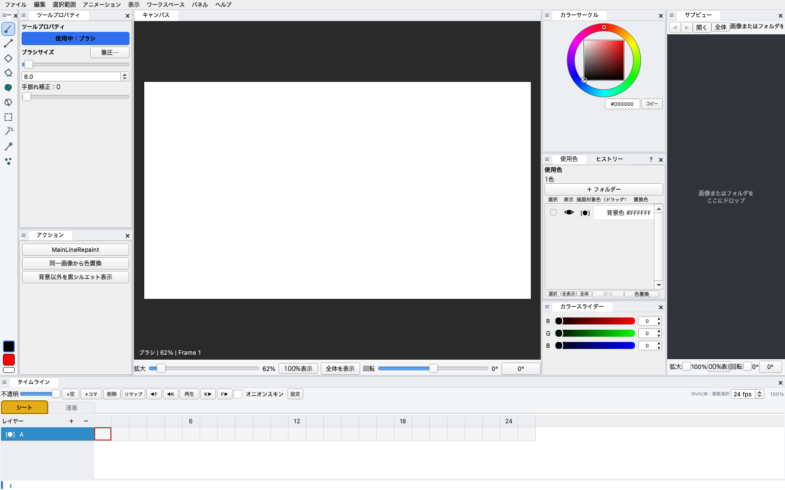

カットフォルダーへの書き出し
作品名・シーン・話数・カット名を入れるだけで、セル画像とタイムシートをまとめて書き出し。フォルダー構成はプリセットとして保存できます。

アニメの仕上げには、長く PaintMan が使われてきました。けれど今では古いソフトになり、新しい環境で使い続けるのは難しくなっています。CLIP STUDIO PAINT は描画もタイムラインも優れていますが、アニメの仕上げのための道具ではないので、かゆいところに手が届きません。PaintMaskAnimator は、その不便を自分たちで解決したいと考えたアニメ業界の人間が開発しています。
開発の狙い 1
線と色を 2 値に保ったまま、塗り分け・色替え・変形。使用色の一覧とカラーチャートで、色をまとめて管理できます。
開発の狙い 2
筆圧・手振れ補正付きのブラシで、動画の線の修正や描き足しまで同じ画面で行えます。
開発の狙い 3
なじみのある操作感のタイムラインで、シートと連番を切り替え、オニオンスキンで前後のセルを見ながら作業できます。
ほかのペイントツールとの違い
仕上げの画は、線と数色の塗りでできています。PaintMaskAnimator は画像に使われている色を一色ずつ並べ、レイヤーのように表示を切り替えたり、塗る対象を決めたりできるようにしました。
使用色
肌色だけを表示 肌色だけを描画対象に 設定は全コマに効く
作品名・シーン・話数・カット名を入れるだけで、セル画像とタイムシートをまとめて書き出し。フォルダー構成はプリセットとして保存できます。
XDTS と東映デジタルタイムシート（TDTS）の読み込み・書き出しに対応。タイムリマップへの貼り付けやドロップでも取り込めます。
CLIP STUDIO のアニメーション（.clip）から、セル画像とタイムラインのセル指定を取り込みます。元のファイルは変更しません。
使用色の親子付けをチャートとして登録し、画像の色へまとめて適用。チャートは .pmag ファイルとして共有できます。
Undo してから別の編集をしても、それまでの履歴は分岐として残ります。いつでも前の結果へ戻れます。
メニューからパネルまで英語表示に対応。表示 › 言語 から切り替えられます。
| Windows | Windows 10 / 11（64 ビット） |
|---|---|
| macOS | Apple Silicon（M1 以降）搭載の Mac。Intel Mac には対応していません。 |
初回の起動で警告が表示された場合は ヘルプ をご覧ください。